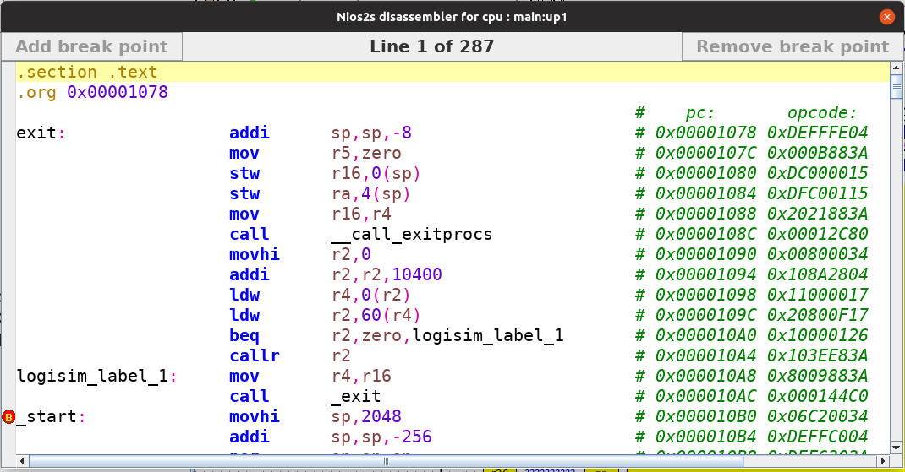

The disassembler takes the program stored in memory and transforms it to a human readable contents. If available the disassembler uses the elf section headers to extract defined labels and sections. Otherwise it uses directly the information stored in memory to decode the information. The disassembler has some features that are described below.
Where possible the disassembler tries to automatically detect labels in your program. The detected labels will be called logisim_label_<x> where <x> is a number starting with 1. The labels are ordered from top to bottom, such that searching for a label is facilitated.
After each line where an instruction is detected the disassembler will insert a remark containing the program counter (pc) value and the instruction's binary opcode.
The disassembler supports breakpoints. Breakpoints can be set/cleared by either clicking in the left vertical bar next to the instruction, or by selecting a line and pressing the b or clicking on either the button Add break point or Remove break point.
The moment the cpu reaches a break point it will stop executing and the simulation state controller will indicate
a break point reached. The instruction next to the break point will not be
executed. Finally upon reaching a break point the disassembler will
automatically jump to the line at which the break point is encountered.